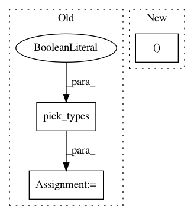

2dd49058dba6cf1527e2414221d4b08b127f96d5,mne/forward/forward.py,,_restrict_gain_matrix,#Any#Any#,1033
Before Change
G = G[sel]
logger.info(" %d planar channels" % len(sel))
else:
sel = pick_types(info, meg="mag", ref_meg=False, exclude=[])
if len(sel) > 0:
G = G[sel]
logger.info(" %d magnetometer or axial gradiometer "
"channels" % len(sel))
After Change
In pattern: SUPERPATTERN
Frequency: 3
Non-data size: 3
Instances
Project Name: mne-tools/mne-python
Commit Name: 2dd49058dba6cf1527e2414221d4b08b127f96d5
Time: 2019-04-24
Author: larson.eric.d@gmail.com
File Name: mne/forward/forward.py
Class Name:
Method Name: _restrict_gain_matrix
Project Name: NeuroTechX/moabb
Commit Name: c52436b4ffbafb42d6e1daf99c7ac252181d27a5
Time: 2018-01-29
Author: vjayaram@danube.is.localnet
File Name: moabb/datasets/physionet_mi.py
Class Name: PhysionetMI
Method Name: _get_single_subject_data
Project Name: mne-tools/mne-python
Commit Name: 9f231cfa8416b5bfe06dc996fa6d50c87b488d37
Time: 2021-01-07
Author: larson.eric.d@gmail.com
File Name: examples/inverse/plot_multidict_reweighted_tfmxne.py
Class Name:
Method Name: